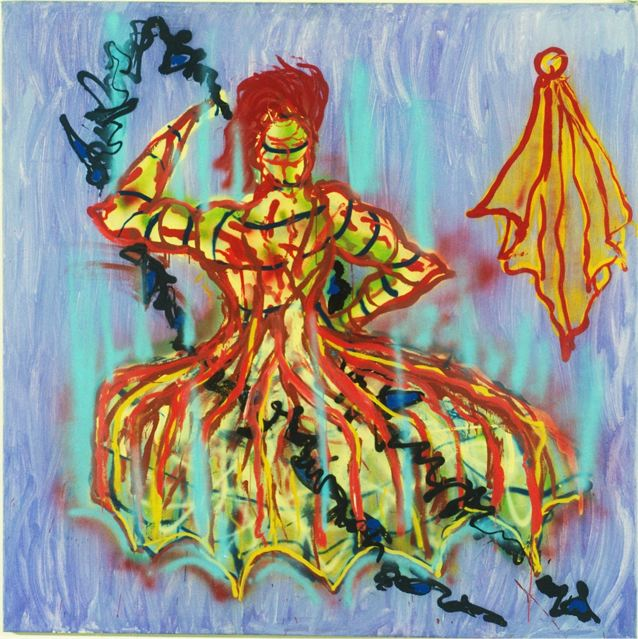
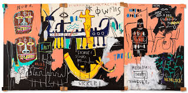
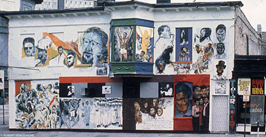

How did Art and Popular Culture operate as levers of change within a modern social movement?
Despite the many legislative successes of the Civil Rights Movement, African Americans weren't fully accepted in society and faced many different inequalities during the 1960s and 1970s. As a response, the Black Power Movement rose by encouraging African Americans to embrace their own cultures and identities instead of succumbing to the limitations of predominantly white societies.
During the mid-1960s, Malcolm X became a very influential figure in the early years of the Black Power Movement as an advocate for self-determination and black nationalism. After his assassination in 1965, his ideals and legacy were solidified, inspiring further activism toward the cause and the creation of the Black Panther Party: a revolutionary activist-based organization.
Many groups and individuals around the nation were able to contribute through different forms of protest, like direct action, creative expression, and more, with the collective goal of empowering black people and ending white supremacy. Various art forms like hip hop, graffiti art, and more were crucial for highlighting the cultural aspect of the Black Power Movement and allowed people to show their pride in their African cultures and reflect on their experiences as black people in America.
Civil Rights Movement peaks, inequalities persist
Malcolm X assassinated, Black Panther Party formed
Hip hop, graffiti art, and cultural expression flourish
Source: "Untitled (1986) by Fab 5 Freddy." Artchive.com, 11 Nov. 2024, www.artchive.com/artwork/untitled-fab-5-freddy-1986/. Accessed 14 Apr. 2025.

CULTURAL FUSION: Freddy merged high art with street culture, proving graffiti belonged in galleries
VISIBILITY: Brought marginalized voices from the streets to mainstream consciousness
IDENTITY: Empowered artists to embrace their authentic cultural expressions
"Untitled" (1986) is an example that effectively shows Freddy's goal in the movement of merging cultures by depicting traditional figures from mainstream culture in the style of graffiti with loose, energetic strokes and vibrant colors.
Source: epp. "BASQUIAT EL GRAN ESPECTACULO (the NILE), 1983 WILL LEAD CHRISTIE'S SPRING MARQUEE WEEK - Christie's." Christie's, 19 Apr. 2023, press.christies.com/basquiat-el-gran-espectaculo-the-nile-1983-will-lead-christies-spring-marquee-week.

RECLAMATION: Reconnected Egyptian culture to its African roots, challenging Eurocentric art history
DISRUPTION: Transformed "urban decay" into powerful political statements
ELEVATION: Proved street art could command the same respect as "high" art
Basquiat highlights Egyptian culture through his use of hieroglyphs and reclaims it as a part of the African culture as Eurocentric perspectives have isolated it in the past. Graffiti was commonly connected to the urban decay of lower class communities like the Bronx as it wasn't controlled and didn't conform to the "standards" society had for art.
Source: "We Are Revolutionaries: The Wall of Respect and Chicago's Mural Movement: Block Museum - Northwestern University." Northwestern.edu, 2023

COMMUNITY SPACE: Transformed a blank wall into a source of neighborhood pride and identity
RESISTANCE: Fought "urban renewal" by asserting cultural permanence
INSPIRATION: Sparked the largest mural movement in Chicago history
"These served to instill pride, hope, and a sense of heritage and racial identity in African American urban neighborhoods in light of nationwide urban renewal initiatives that threatened to destroy such communities under the guise of 'slum clearance.' Chicago produced the largest number of murals."
— Perry, Regenia, et al. "African American Art." Oxford Art Online, Jan. 2003
Art moved from the margins to the center, forcing mainstream society to see and hear voices that had been systematically silenced.
Artists reclaimed narratives, rewrote histories, and celebrated African heritage in defiance of cultural erasure.
Murals and graffiti transformed neighborhoods into galleries, creating shared spaces of resistance and pride.
Art didn't just document change—it created it, turning walls into weapons and paint into power.
The Revolution Was Not Televised. It Was Painted.
RODRIGUES, LAURIE A. "'SAMO© as an Escape Clause': Jean-Michel Basquiat's Engagement with a Commodified American Africanism." Journal of American Studies, vol. 45, no. 2, 2011, pp. 227–43. JSTOR, http://www.jstor.org/stable/23016272. Accessed 28 May 2025.
"ART | FAB 5 FREDDY." FAB 5 FREDDY, 2024, www.fab5freddy.com/portfolio. Accessed 28 May 2025.
Jon Anderson TRIBUNE, STAFF W. "Pride and Hope Adorn a Wall: With Help from an Artist, Youths Put Up a Mural with a Message." Chicago Tribune (1997-), 05 June 1998, p. 1. ProQuest. Web. 28 May 2025.
Perry, Regenia, et al. "African American Art." Oxford Art Online, Jan. 2003, https://doi.org/10.1093/gao/9781884446054.article.t001094. Accessed 28 May 2025.
Shakur, Prince. "The Power of Black Art in Harlem, Black Power, and Beyond." Substack.com, Millennial Writer Life, 14 July 2023, princeshakur.substack.com/p/the-power-of-black-art-in-harlem. Accessed 5 June 2025.
"The Foundations of Black Power." National Museum of African American History and Culture, Dec. 2021, nmaahc.si.edu/explore/stories/foundations-black-power. Accessed 5 June 2025.
Thank you for exploring this exhibit!
H300 Art and Social Movements Research (ASMR) Project - 2025
A project by Kellen H and Lauryn C